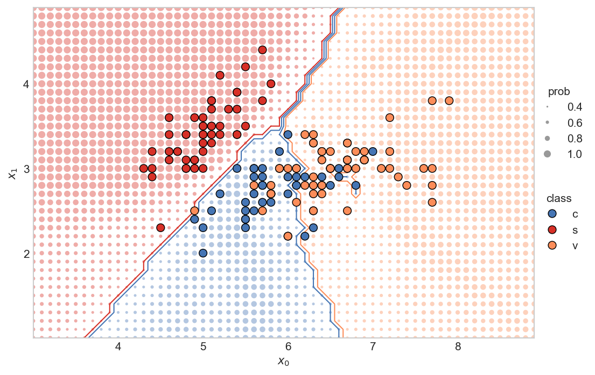
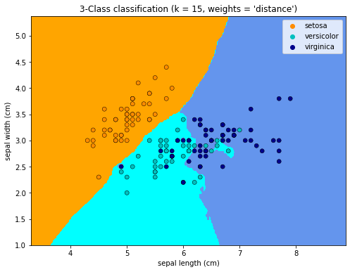
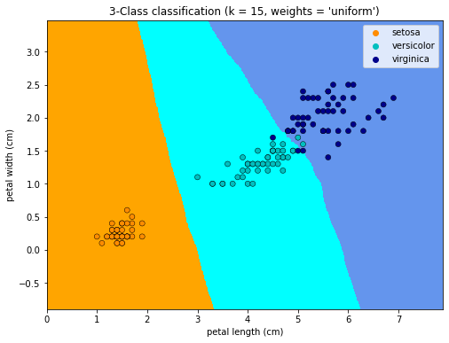
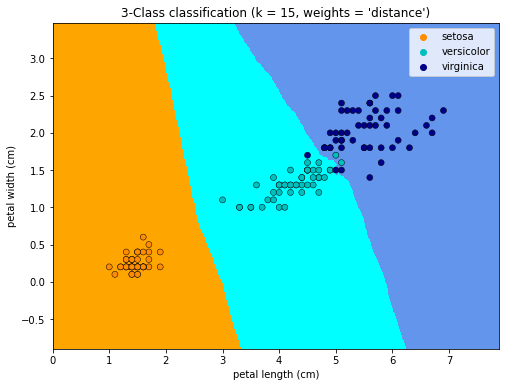
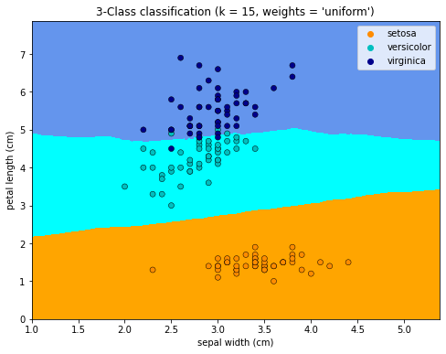

import numpy as np
from sklearn.linear_model import LogisticRegression
from sklearn import datasets
from mlxtend.plotting import plot_decision_regions
iris = datasets.load_iris()
X = iris.data[:, [0,2]]
y = iris.target
y = np.concatenate((y, np.ones(50)+2, np.ones(50)+3))
y = y.astype(int)
X = np.concatenate((X, X[:50]*2, X[:50]*3))
lr = LogisticRegression(solver='newton-cg', multi_class='multinomial')
lr.fit(X, y)
plot_decision_regions(X, y, clf=lr)
---------------------------------------------------------------------------
ModuleNotFoundError Traceback (most recent call last)
/var/folders/kl/h_r05n_j76n32kt0dwy7kynw0000gn/T/ipykernel_5735/2083297115.py in <module>
2 from sklearn.linear_model import LogisticRegression
3 from sklearn import datasets
----> 4 from mlxtend.plotting import plot_decision_regions
5
6 iris = datasets.load_iris()
ModuleNotFoundError: No module named 'mlxtend'
#lr.predict(X)
#y
array([0, 0, 0, 0, 0, 0, 0, 0, 0, 0, 0, 0, 0, 0, 0, 0, 0, 0, 0, 0, 0, 0,
0, 0, 0, 0, 0, 0, 0, 0, 0, 0, 0, 0, 0, 0, 0, 0, 0, 0, 0, 0, 0, 0,
0, 0, 0, 0, 0, 0, 1, 1, 1, 1, 1, 1, 1, 1, 1, 1, 1, 1, 1, 1, 1, 1,
1, 1, 1, 1, 1, 1, 1, 1, 1, 1, 1, 1, 1, 1, 1, 1, 1, 1, 1, 1, 1, 1,
1, 1, 1, 1, 1, 1, 1, 1, 1, 1, 1, 1, 2, 2, 2, 2, 2, 2, 2, 2, 2, 2,
2, 2, 2, 2, 2, 2, 2, 2, 2, 2, 2, 2, 2, 2, 2, 2, 2, 2, 2, 2, 2, 2,
2, 2, 2, 2, 2, 2, 2, 2, 2, 2, 2, 2, 2, 2, 2, 2, 2, 2, 3, 3, 3, 3,
3, 3, 3, 3, 3, 3, 3, 3, 3, 3, 3, 3, 3, 3, 3, 3, 3, 3, 3, 3, 3, 3,
3, 3, 3, 3, 3, 3, 3, 3, 3, 3, 3, 3, 3, 3, 3, 3, 3, 3, 3, 3, 3, 3,
3, 3, 4, 4, 4, 4, 4, 4, 4, 4, 4, 4, 4, 4, 4, 4, 4, 4, 4, 4, 4, 4,
4, 4, 4, 4, 4, 4, 4, 4, 4, 4, 4, 4, 4, 4, 4, 4, 4, 4, 4, 4, 4, 4,
4, 4, 4, 4, 4, 4, 4, 4])
# https://stackoverflow.com/questions/41138706/recreating-decision-boundary-plot-in-python-with-scikit-learn-and-matplotlib
import numpy as np
import matplotlib.pyplot as plt
from sklearn import datasets
from matplotlib.lines import Line2D
from matplotlib.ticker import MaxNLocator
from sklearn import neighbors
iris = datasets.load_iris()
x = iris.data[:,0:2]
y = iris.target
# create the x0, x1 feature
x0 = x[:,0]
x1 = x[:,1]
# set main parameters for KNN plot
N_NEIGHBORS = 15 # KNN number of neighbors
H = 0.1 # mesh stepsize
PROB_DOT_SCALE = 40 # modifier to scale the probability dots
PROB_DOT_SCALE_POWER = 3 # exponential used to increase/decrease size of prob dots
TRUE_DOT_SIZE = 50 # size of the true labels
PAD = 1.0 # how much to "pad" around the true labels
clf = neighbors.KNeighborsClassifier(N_NEIGHBORS, weights='uniform')
clf.fit(x, y)
# find the min/max points for both x0 and x1 features
# these min/max values will be used to set the bounds
# for the plot
x0_min, x0_max = np.round(x0.min())-PAD, np.round(x0.max()+PAD)
x1_min, x1_max = np.round(x1.min())-PAD, np.round(x1.max()+PAD)
# create 1D arrays representing the range of probability data points
# on both the x0 and x1 axes.
x0_axis_range = np.arange(x0_min,x0_max, H)
x1_axis_range = np.arange(x1_min,x1_max, H)
# create meshgrid between the two axis ranges
xx0, xx1 = np.meshgrid(x0_axis_range, x1_axis_range)
# put the xx in the same dimensional format as the original x
# because it's easier to work with that way (at least for me)
# * shape will be: [no_dots, no_dimensions]
# where no_dimensions = 2 (x0 and x1 axis)
xx = np.reshape(np.stack((xx0.ravel(),xx1.ravel()),axis=1),(-1,2))
yy_hat = clf.predict(xx) # prediction of all the little dots
yy_prob = clf.predict_proba(xx) # probability of each dot being
# the predicted color
yy_size = np.max(yy_prob, axis=1)
# make figure
plt.style.use('seaborn-whitegrid') # set style because it looks nice
fig, ax = plt.subplots(nrows=1, ncols=1, figsize=(8,6), dpi=150)
# establish colors and colormap
# * color blind colors, from
# https://towardsdatascience.com/two-simple-steps-to-create-colorblind-friendly-data-visualizations-2ed781a167ec
redish = '#d73027'
orangeish = '#fc8d59'
yellowish = '#fee090'
blueish = '#4575b4'
colormap = np.array([redish,blueish,orangeish])
# plot all the little dots, position defined by the xx values, color
# defined by the knn predictions (yy_hat), and size defined by the
# probability of that color (yy_prob)
# * because the yy_hat values are either 0, 1, 2, we can use
# these as values to index into the colormap array
# * size of dots (the probability) increases exponentially (^3), so that there is
# a nice difference between different probabilities. I'm sure there is a more
# elegant way to do this though...
# * linewidths=0 so that there are no "edges" around the dots
ax.scatter(xx[:,0], xx[:,1], c=colormap[yy_hat], alpha=0.4,
s=PROB_DOT_SCALE*yy_size**PROB_DOT_SCALE_POWER, linewidths=0,)
# plot the contours
# * we have to reshape the yy_hat to get it into a
# 2D dimensional format, representing both the x0
# and x1 axis
# * the number of levels and color scheme was manually tuned
# to make sense for this data. Would probably change, for
# instance, if there were 4, or 5 (etc.) classes
ax.contour(x0_axis_range, x1_axis_range,
np.reshape(yy_hat,(xx0.shape[0],-1)),
levels=3, linewidths=1,
colors=[redish,blueish, blueish,orangeish,])
# plot the original x values.
# * zorder is 3 so that the dots appear above all the other dots
ax.scatter(x[:,0], x[:,1], c=colormap[y], s=TRUE_DOT_SIZE, zorder=3,
linewidths=0.7, edgecolor='k')
# create legends
x_min, x_max = ax.get_xlim()
y_min, y_max = ax.get_ylim()
# set x-y labels
ax.set_ylabel(r"$x_1$")
ax.set_xlabel(r"$x_0$")
# create class legend
# Line2D properties: https://matplotlib.org/stable/api/_as_gen/matplotlib.lines.Line2D.html
# about size of scatter plot points: https://stackoverflow.com/a/47403507/9214620
legend_class = []
for flower_class, color in zip(['c', 's', 'v'], [blueish, redish, orangeish]):
legend_class.append(Line2D([0], [0], marker='o', label=flower_class,ls='None',
markerfacecolor=color, markersize=np.sqrt(TRUE_DOT_SIZE),
markeredgecolor='k', markeredgewidth=0.7))
# iterate over each of the probabilities to create prob legend
prob_values = [0.4, 0.6, 0.8, 1.0]
legend_prob = []
for prob in prob_values:
legend_prob.append(Line2D([0], [0], marker='o', label=prob, ls='None', alpha=0.8,
markerfacecolor='grey',
markersize=np.sqrt(PROB_DOT_SCALE*prob**PROB_DOT_SCALE_POWER),
markeredgecolor='k', markeredgewidth=0))
legend1 = ax.legend(handles=legend_class, loc='center',
bbox_to_anchor=(1.05, 0.35),
frameon=False, title='class')
legend2 = ax.legend(handles=legend_prob, loc='center',
bbox_to_anchor=(1.05, 0.65),
frameon=False, title='prob', )
ax.add_artist(legend1) # add legend back after it disappears
ax.set_yticks(np.arange(x1_min,x1_max, 1)) # I don't like the decimals
ax.grid(False) # remove gridlines (inherited from 'seaborn-whitegrid' style)
# only use integers for axis tick labels
# from: https://stackoverflow.com/a/34880501/9214620
ax.xaxis.set_major_locator(MaxNLocator(integer=True))
ax.yaxis.set_major_locator(MaxNLocator(integer=True))
# set the aspect ratio to 1, for looks
ax.set_aspect(1)
# remove first ticks from axis labels, for looks
# from: https://stackoverflow.com/a/19503828/9214620
ax.set_xticks(ax.get_xticks()[1:-1])
ax.set_yticks(np.arange(x1_min,x1_max, 1)[1:])
plt.show()

%matplotlib inline
Nearest Neighbors Classification¶
Sample usage of Nearest Neighbors classification. It will plot the decision boundaries for each class.
import numpy as np
import matplotlib.pyplot as plt
import seaborn as sns
from matplotlib.colors import ListedColormap
from sklearn import neighbors, datasets
n_neighbors = 15
# import some data to play with
iris = datasets.load_iris()
# we only take the first two features. We could avoid this ugly
# slicing by using a two-dim dataset
X = iris.data[:, :2]
y = iris.target
h = 0.02 # step size in the mesh
# Create color maps
cmap_light = ListedColormap(["orange", "cyan", "cornflowerblue"])
cmap_bold = ["darkorange", "c", "darkblue"]
for weights in ["uniform", "distance"]:
# we create an instance of Neighbours Classifier and fit the data.
clf = neighbors.KNeighborsClassifier(n_neighbors, weights=weights)
clf.fit(X, y)
# Plot the decision boundary. For that, we will assign a color to each
# point in the mesh [x_min, x_max]x[y_min, y_max].
x_min, x_max = X[:, 0].min() - 1, X[:, 0].max() + 1
y_min, y_max = X[:, 1].min() - 1, X[:, 1].max() + 1
xx, yy = np.meshgrid(np.arange(x_min, x_max, h), np.arange(y_min, y_max, h))
Z = clf.predict(np.c_[xx.ravel(), yy.ravel()])
# Put the result into a color plot
Z = Z.reshape(xx.shape)
plt.figure(figsize=(8, 6))
plt.contourf(xx, yy, Z, cmap=cmap_light)
# Plot also the training points
sns.scatterplot(
x=X[:, 0],
y=X[:, 1],
hue=iris.target_names[y],
palette=cmap_bold,
alpha=1.0,
edgecolor="black",
)
plt.xlim(xx.min(), xx.max())
plt.ylim(yy.min(), yy.max())
plt.title(
"3-Class classification (k = %i, weights = '%s')" % (n_neighbors, weights)
)
plt.xlabel(iris.feature_names[0])
plt.ylabel(iris.feature_names[1])
plt.show()

n_neighbors = 15
# import some data to play with
iris = datasets.load_iris()
# we only take the first two features. We could avoid this ugly
# slicing by using a two-dim dataset
X = iris.data[:, 2:4]
y = iris.target
h = 0.02 # step size in the mesh
# Create color maps
cmap_light = ListedColormap(["orange", "cyan", "cornflowerblue"])
cmap_bold = ["darkorange", "c", "darkblue"]
for weights in ["uniform", "distance"]:
# we create an instance of Neighbours Classifier and fit the data.
clf = neighbors.KNeighborsClassifier(n_neighbors, weights=weights)
clf.fit(X, y)
# Plot the decision boundary. For that, we will assign a color to each
# point in the mesh [x_min, x_max]x[y_min, y_max].
x_min, x_max = X[:, 0].min() - 1, X[:, 0].max() + 1
y_min, y_max = X[:, 1].min() - 1, X[:, 1].max() + 1
xx, yy = np.meshgrid(np.arange(x_min, x_max, h), np.arange(y_min, y_max, h))
Z = clf.predict(np.c_[xx.ravel(), yy.ravel()])
# Put the result into a color plot
Z = Z.reshape(xx.shape)
plt.figure(figsize=(8, 6))
plt.contourf(xx, yy, Z, cmap=cmap_light)
# Plot also the training points
sns.scatterplot(
x=X[:, 0],
y=X[:, 1],
hue=iris.target_names[y],
palette=cmap_bold,
alpha=1.0,
edgecolor="black",
)
plt.xlim(xx.min(), xx.max())
plt.ylim(yy.min(), yy.max())
plt.title(
"3-Class classification (k = %i, weights = '%s')" % (n_neighbors, weights)
)
plt.xlabel(iris.feature_names[2])
plt.ylabel(iris.feature_names[3])
plt.show()


n_neighbors = 15
# import some data to play with
iris = datasets.load_iris()
# we only take the first two features. We could avoid this ugly
# slicing by using a two-dim dataset
X = iris.data[:, 1:3]
y = iris.target
h = 0.02 # step size in the mesh
# Create color maps
cmap_light = ListedColormap(["orange", "cyan", "cornflowerblue"])
cmap_bold = ["darkorange", "c", "darkblue"]
for weights in ["uniform", "distance"]:
# we create an instance of Neighbours Classifier and fit the data.
clf = neighbors.KNeighborsClassifier(n_neighbors, weights=weights)
clf.fit(X, y)
# Plot the decision boundary. For that, we will assign a color to each
# point in the mesh [x_min, x_max]x[y_min, y_max].
x_min, x_max = X[:, 0].min() - 1, X[:, 0].max() + 1
y_min, y_max = X[:, 1].min() - 1, X[:, 1].max() + 1
xx, yy = np.meshgrid(np.arange(x_min, x_max, h), np.arange(y_min, y_max, h))
Z = clf.predict(np.c_[xx.ravel(), yy.ravel()])
# Put the result into a color plot
Z = Z.reshape(xx.shape)
plt.figure(figsize=(8, 6))
plt.contourf(xx, yy, Z, cmap=cmap_light)
# Plot also the training points
sns.scatterplot(
x=X[:, 0],
y=X[:, 1],
hue=iris.target_names[y],
palette=cmap_bold,
alpha=1.0,
edgecolor="black",
)
plt.xlim(xx.min(), xx.max())
plt.ylim(yy.min(), yy.max())
plt.title(
"3-Class classification (k = %i, weights = '%s')" % (n_neighbors, weights)
)
plt.xlabel(iris.feature_names[1])
plt.ylabel(iris.feature_names[2])
plt.show()

type(X)
numpy.ndarray
type(y)
numpy.ndarray
X.shape
(150, 2)
y.shape
(150,)
iris.target_names[y]
array(['setosa', 'setosa', 'setosa', 'setosa', 'setosa', 'setosa',
'setosa', 'setosa', 'setosa', 'setosa', 'setosa', 'setosa',
'setosa', 'setosa', 'setosa', 'setosa', 'setosa', 'setosa',
'setosa', 'setosa', 'setosa', 'setosa', 'setosa', 'setosa',
'setosa', 'setosa', 'setosa', 'setosa', 'setosa', 'setosa',
'setosa', 'setosa', 'setosa', 'setosa', 'setosa', 'setosa',
'setosa', 'setosa', 'setosa', 'setosa', 'setosa', 'setosa',
'setosa', 'setosa', 'setosa', 'setosa', 'setosa', 'setosa',
'setosa', 'setosa', 'versicolor', 'versicolor', 'versicolor',
'versicolor', 'versicolor', 'versicolor', 'versicolor',
'versicolor', 'versicolor', 'versicolor', 'versicolor',
'versicolor', 'versicolor', 'versicolor', 'versicolor',
'versicolor', 'versicolor', 'versicolor', 'versicolor',
'versicolor', 'versicolor', 'versicolor', 'versicolor',
'versicolor', 'versicolor', 'versicolor', 'versicolor',
'versicolor', 'versicolor', 'versicolor', 'versicolor',
'versicolor', 'versicolor', 'versicolor', 'versicolor',
'versicolor', 'versicolor', 'versicolor', 'versicolor',
'versicolor', 'versicolor', 'versicolor', 'versicolor',
'versicolor', 'versicolor', 'versicolor', 'versicolor',
'versicolor', 'versicolor', 'versicolor', 'virginica', 'virginica',
'virginica', 'virginica', 'virginica', 'virginica', 'virginica',
'virginica', 'virginica', 'virginica', 'virginica', 'virginica',
'virginica', 'virginica', 'virginica', 'virginica', 'virginica',
'virginica', 'virginica', 'virginica', 'virginica', 'virginica',
'virginica', 'virginica', 'virginica', 'virginica', 'virginica',
'virginica', 'virginica', 'virginica', 'virginica', 'virginica',
'virginica', 'virginica', 'virginica', 'virginica', 'virginica',
'virginica', 'virginica', 'virginica', 'virginica', 'virginica',
'virginica', 'virginica', 'virginica', 'virginica', 'virginica',
'virginica', 'virginica', 'virginica'], dtype='<U10')